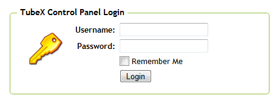

Control Panel Basics
Related Documentation
Be sure to also see the following related documentation:
Authentication
Accessing the TubeX control panel interface requires username and password authentication. When you access the control panel and
it determines that authentication is required, you will see a screen that displays the following login prompt:
It is possible to setup many control panel accounts, each with their own username, password, and privileges. You can find additional information about control panel accounts in the Administrators section of the documentation.
The authentication screen fields are as follows:
Main Page

It is possible to setup many control panel accounts, each with their own username, password, and privileges. You can find additional information about control panel accounts in the Administrators section of the documentation.
The authentication screen fields are as follows:
-
Username - Enter the username for the control panel account you want to login as
Password - Enter the password associated with the control panel username you entered
Remember Me - Check this box if you would like your control panel login information to be stored in a cookie so you will be automatically logged in the next time you access the control panel. This option will store your login information for up to 90 days.
Each time you login to the TubeX control panel or click on the TubeX logo, you will be taken to the main control panel page.
This page will display links to most of the main software functions, as well as an area that shows new videos, users, and may
have additional information in future releases. The main page will look something like this:

Search Pages
-
Logo/Home - Click the logo at any time to return to the main page
Menu - The menu allows you to access the control panel functions at any time from any of the control panel interfaces. Hovering your mouse pointer over a menu item will cause the options for that menu to appear below. Click on any of the options to access that control panel function.
Log Out Button - Click this button at any time to log out of the control panel interface. This will erase your stored login information (even if using the Remember Me option) and you will have to enter your username and password the next time you access the control panel.
Notification Area - This section of the page is where notification messages will be displayed. You will receive notification messages frequently when working in the control panel, so be sure to keep an eye on this area!
Quick Function Access - On the main control panel page you will have quick access (instead of going through the menu system) to most of the main functions. Click any of the links in this area to access the associated function.
One of the primary tasks you will be doing in the control panel is searching for items. To make searching easier to master, all
of the search interfaces in the control panel use the same basic layout. Once you have learned to search one type of item, you
will also know how to search for any type of item! The search pages will look something like this:

Dialogs
-
Search/Sorting Options - Use this section of the search interface to specify what you are looking for and how you
would like the results sorted. A more detailed discussion of the search and sorting options
can be found in the Searching section of the
documentation.
Notification Message - Notification messages will appear when you perform an action on one or more of the items displayed in the search results. Messages with white text are simple informative messages (as in this example), whereas error messages will be displayed in red text. Notifications can be closed by clicking the X in the upper left-hand corner, and will also dissappear on their own after a short time.
Item Functions - Each item in the search results will have one or more functions that you can apply to that individual item. Those function icons will appear for each item in the search results, and you can click on those icons to perform the associated action. The generic actions are described in more detail below, and actions specific for an item type are described in that item type's documentation.
Toolbar - The toolbar will appear at the bottom of the search pages, and will always remain at the bottom of the page even as you scroll through the search results. This allows you to quickly access any of the functions at any time.
Page Navigation - The page navigation section of the toolbar allows you to page through the search results, if there are multiple pages of results. You can use the icons to navigate the pages, or enter a page number in the text input field. After you enter a number in the text input field, press the Enter (or Return) key on your keyboard to jump to that page.
 Click this icon to be taken to the top of the page
Click this icon to be taken to the top of the page Click this icon to be taken to the first page
of search results. This will be greyed if you are
already on the first page.
Click this icon to be taken to the first page
of search results. This will be greyed if you are
already on the first page. Click this icon to be taken to the previous
page of search results. This will be greyed if you
are on the first page.
Click this icon to be taken to the previous
page of search results. This will be greyed if you
are on the first page. Click this icon to be taken to the last page
of search results. This will be greyed if you are
on the last page.
Click this icon to be taken to the last page
of search results. This will be greyed if you are
on the last page. Click this icon to be taken to the next
page of search results. This will be greyed if you
are already on the last page.
Click this icon to be taken to the next
page of search results. This will be greyed if you
are already on the last page.
Toolbar Functions - The middle section of the toolbar will contain various icons for functions that can be executed in relation to the current search items. Clicking a toolbar function icon when you have none of the search results selected (using their associated checkboxes) will run that function on all of the items that match your current search. If you do have items checked, the function will be run on only those items.
There are a few common icons that will appear on most search page toolbars. Those include the following:
 Click this icon to show or hide the saved searches tab. A more detailed discussion of saved
searches can be found in the Saved Searches
section of the documentation.
Click this icon to show or hide the saved searches tab. A more detailed discussion of saved
searches can be found in the Saved Searches
section of the documentation. Click this icon to display the dialog where you can add a new item of the type you are
currently searching.
Click this icon to display the dialog where you can add a new item of the type you are
currently searching. Click this icon to display the bulk editing dialog where you can make changes to multiple
items at once.
Click this icon to display the bulk editing dialog where you can make changes to multiple
items at once. Click this icon to display the e-mail dialog where you can compose and send an e-mail message
to the selected or matching items.
Click this icon to display the e-mail dialog where you can compose and send an e-mail message
to the selected or matching items.Click this icon to delete the selected or matching items.
 Click this icon to view the documentation for the item type you are currently searching.
Click this icon to view the documentation for the item type you are currently searching.
Saved Searches - The saved searches tab will appear when you click on the saved searches icon in the toolbar. A more detailed discussion of saved searches can be found in the Saved Searches section of the documentation.
Check/Uncheck All Items - Use this checkbox to check or uncheck all of the items currently displayed in the search results
Dialogs are used throughout the control panel interface when it is necessary to collect or modify data (commonly when adding or
editing an item). When a dialog is needed, it will be displayed over top of the main control panel interface, and will look
something like this:

-
Title Bar - The title bar will show a short message describing the purpose of the dialog window. You can also
click on the bar and drag with your mouse to move the dialog if you wish.
Notification Message - Notification messages will appear when you perform an action on one or more of the items displayed in the search results. Messages with red text are error messages indicating some type of problem (as in this example), whereas simple informative messages will be displayed in white text. Notifications can be closed by clicking the X in the upper left-hand corner, and will also dissappear on their own after a short time.
Close Dialog - Click on this icon at any time to close the dialog
Context Help - Click on this icon to view the documentation associated with this dialog
Dialog Buttons - Buttons to perform actions will appear in this section of the dialog window. Most dialogs will have a Close or Cancel button that you can use to exit from the dialog and return to the main control panel interface
Main Interface - The main control panel interface will still be partially visible, but you will not be able to interact with any of the items displayed